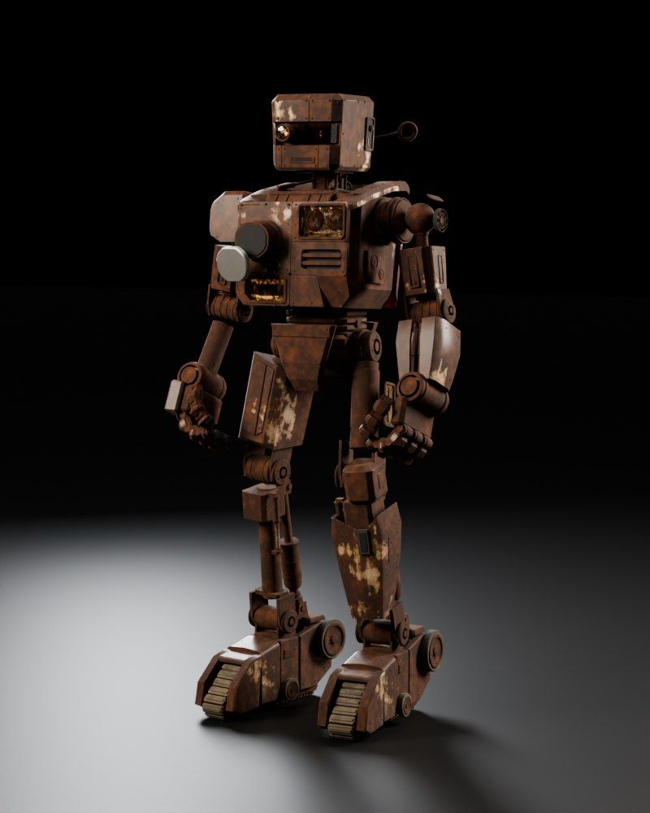

Session 6 · Week 3 · Thursday
Ship It
Macros, unsafe code, calling C, benchmarks, WebAssembly and publishing: the edges of Rust, used on purpose. Then the final project, where everything from six sessions plans Robbie's day.
Robbie's rust95% · chest plate cracked

Session materials
Presentation · 60 minSlides23 slides with runnable code, a few broken on purpose and one that panics on purpose. Arrow keys to move, N for the teacher's speaker notes.
Cheat sheetOne page, all of Session 6macro_rules!, unsafe and SAFETY comments, extern "C", C strings, overflow methods, wasm and publishing on one screen.
Student HandbookShip It HandbookEvery idea from today with runnable examples, memory tricks, an error field guide and 10 practice questions.
Quiz 6 · 15 minShip It Quiz12 questions, pass mark 70%. Your best score is saved in this browser.
The final
Final project · 40% · due on exam dayRobbie Mission ControlA library and command-line tool that runs a crew of Robbies through a mission and reports back. Graded out of 100 by the same grader you can run yourself.
Tool · in your browserRobbie ArenaWatch any mission run tile by tile, then paste your program's output to check it matches the spec.
Tool · in your browserReview LabRead your grader report in plain English, see the code review rubric, and work out your course grade.
Exam day · the class after Session 6Two new features, 60 minutesHand in the project, then add two features you'll see on the day. A clean design makes it a short hour.
Build it
Lab 6 · in class · 30 minThe Final Build LabFive steps, nine tests: a macro, a safe wrapper around unsafe code, two calls into C, a benchmark, and the paperwork cargo publish asks for.
Final project starterrobbie-mcEvery type and signature written, every body a todo!(). 12 visible tests and a README that is the spec.
The graderrobbie-graderBuilds, tests, lints and scores a homework or the final, exactly as your teacher will. Run it any time.